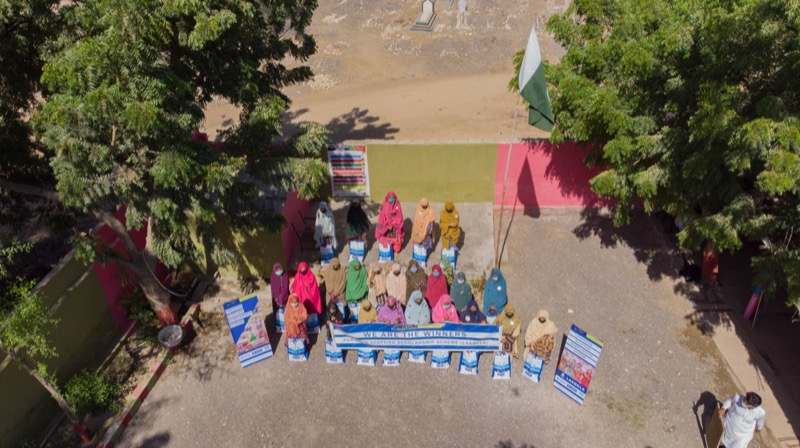

Impact
Public proof from Pakistan's rural innovation programs.
Aggregate metrics across WANG's six initiatives demonstrate measurable outcomes in AI literacy, digital access, women's empowerment, internet infrastructure, and community learning.
As of April 2, 2026. Public figures here combine WANG-led field programs (WALI, WIRE, relief, climate) with reach and learner metrics published on partner-facing platforms (especially Urdu AI). “Reach” and “learners” are not interchangeable — reach counts distribution and visibility across channels; learner counts reflect documented progress where the product or program tracks cohorts. Urdu AI training counters below are aligned to impact.urduai.org; WALI 2025 training counters are aligned to wali.edu.pk. Contact WANG for a metrics glossary aligned to audits and donor due diligence.

Impact by initiative
Each initiative contributes measurable outcomes to the aggregate picture.
Impact is not just numbers. It is the public documentation, partner validation, and community transformation that makes the work credible and investable.
Urdu AI
29M+ reach and 800K+ learners remain the broad public scale story. Separately, the live Urdu AI impact dashboard now reports 7,968+ participants, 248 trainings, 3,175 female participants, 31 active Dosts, and district-level coverage across 29 districts. Community size across online channels is now in the 1M+ band.
WALI
District-level nonprofit proof remains strong through scholarships, re-enrollment, climate, and resilience work. For current 2025 training counters, the WALI public site reports 207 total students, including 122 female and 85 male students, alongside 10 AI workshops and 4 winter camps.
PakSpeed
32K+ users testing internet connectivity. Crowdsourced speed test data generating evidence for better infrastructure and ISP accountability across Pakistan.
WIRE
500+ women empowered, 200+ girls trained. Mother-daughter innovation model pairing rural craftsmanship with digital skills. 50+ homes rebuilt for displaced families.
Milestones
Impact timeline
2012
Community work begins in Ahmed Abad Wang
Grassroot programs, civic education, and early partnerships take root in Lasbela — the field foundation for today’s six-initiative model.
2014
First public website & journal
Digital storytelling widens visibility; the Welcome Blog marks an early milestone in WANG’s public archive.
2017
First community programs launched
Structured field programs and partnerships deepen digital literacy, youth engagement, and women’s pathways before the WALI lab era.
2020
COVID-19 response — education continuity
When schools closed, WANG pivoted to mobile learning, remote support, and community-safe outreach so learning did not stop in Lasbela.
2021
WALI lab established
WALI (WANG Lab of Innovation) opens in Lasbela — a solar-powered, community-rooted hub for camps, women’s programs, and youth pathways.
2022
Flood relief — Lasbela community support
Floods devastate the region; WANG delivers relief and recovery alongside expanded cohorts and resilient lab operations.
2023
Urdu AI launches
Pakistan’s first Urdu-language AI education platform goes live — AI literacy at national scale in communities’ own language.
2024
100K+ learners milestone & CAREC Gender Climate Champion
Urdu AI crosses six figures of documented learners; PakSpeed passes 32K users; WIRE reaches 500+ women; district footprint grows. WANG receives CAREC Gender Climate Champion 2024 recognition (organization category) — see journal and awards.
2025
AVPN, Google.org AI Opportunity Fund & global partners
AVPN / Google.org AI skilling infrastructure expands across APAC with WANG’s Urdu AI cohort; public impact reporting shows 31 active Dosts and district coverage across 29 districts. K‑Electric Karachi Awards 2025 — ceremony and Urdu press documented on journal and awards.
2026
800K+ learners and 1M+ community
Urdu AI remains in the 800K+ learner band while the wider online community crosses 1M+. The live impact dashboard reports 7,968+ participants and 248 trainings; WALI's public 2025 counters report 207 students with 10 AI workshops and 4 winter camps.
Partner with us
Public proof makes WANG investable and partner-ready.
Every metric above is backed by public platforms, partner documentation, and visible community outcomes. If you are looking for credible execution in Pakistan's digital development space, WANG is ready.